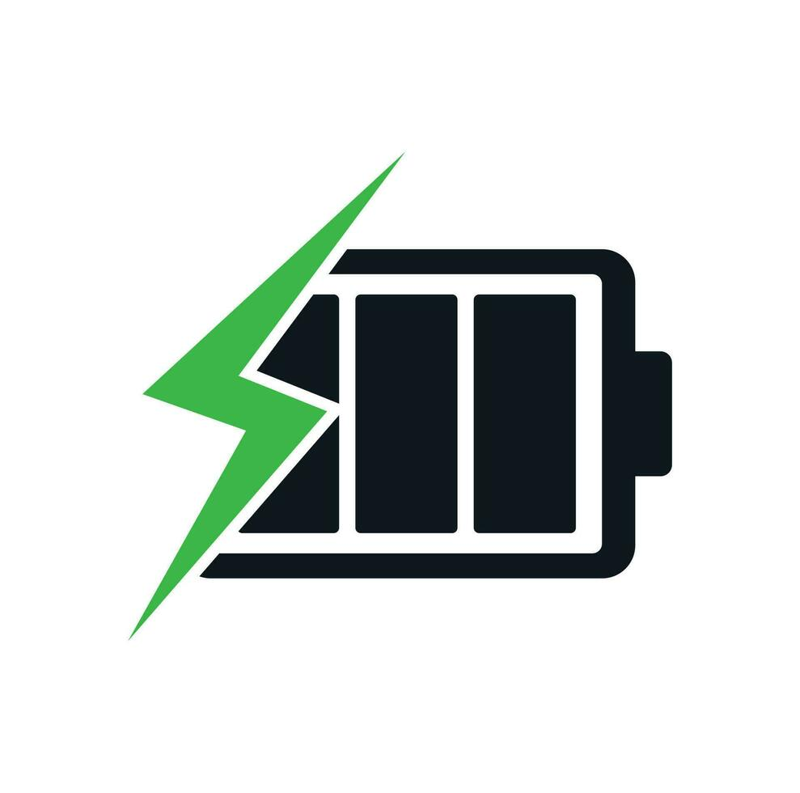
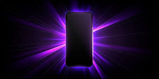

Eficiencia EnergéticaLa gama media destaca por sus celdas de batería de cinco mil miliamperios optimizadas. Al usar pantallas de resoluciones controladas, permiten una autonomía continua de hasta dos días de uso regular de redes sociales con una carga. |
Materiales y PantallasUtilizan polímeros de alta resistencia que imitan el cristal, reduciendo el peso final. Sus pantallas AMOLED ofrecen tasas de actualización fluidas de ciento veinte hercios, garantizando una navegación suave por los menús del sistema. |

